MIL Debug Patches
outputs/mil_dino_shared_seasonal_20m_rgb_green_mean_green_mean_cuda/pca_val_best/debug_top_confident/images
 bag 213 | FP | bag 1.000 | inst 1.000 | 0.0m
bag 213 | FP | bag 1.000 | inst 1.000 | 0.0m bag 191 | FP | bag 0.999 | inst 0.999 | 0.0m
bag 191 | FP | bag 0.999 | inst 0.999 | 0.0m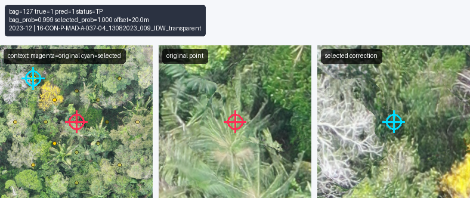
bag 127 | TP | bag 0.999 | inst 1.000 | 20.0m bag 210 | FP | bag 0.999 | inst 0.999 | 0.0m
bag 210 | FP | bag 0.999 | inst 0.999 | 0.0m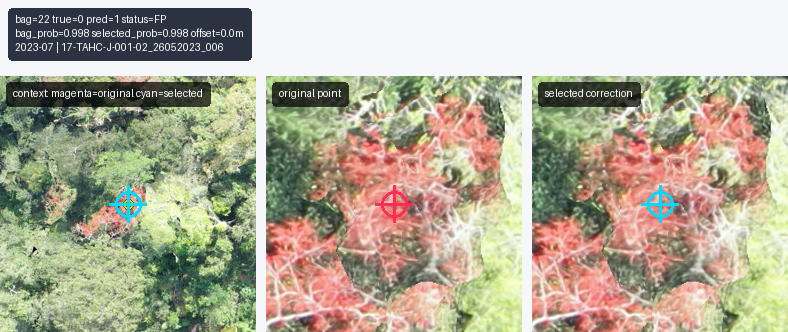
bag 22 | FP | bag 0.998 | inst 0.998 | 0.0m bag 140 | TP | bag 0.996 | inst 1.000 | 20.0m
bag 140 | TP | bag 0.996 | inst 1.000 | 20.0m bag 158 | TP | bag 0.995 | inst 1.000 | 20.0m
bag 158 | TP | bag 0.995 | inst 1.000 | 20.0m bag 38 | FP | bag 0.994 | inst 0.994 | 0.0m
bag 38 | FP | bag 0.994 | inst 0.994 | 0.0m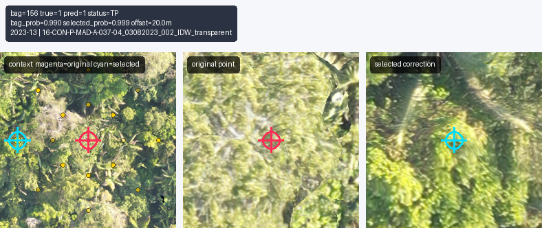
bag 156 | TP | bag 0.990 | inst 0.999 | 20.0m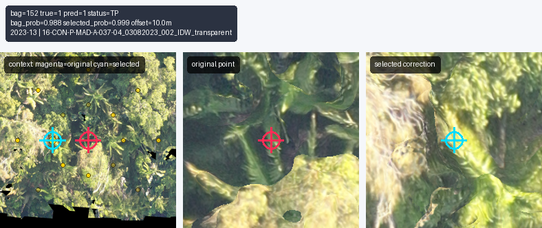
bag 152 | TP | bag 0.988 | inst 0.999 | 10.0m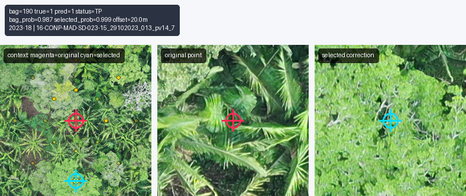
bag 190 | TP | bag 0.987 | inst 0.999 | 20.0m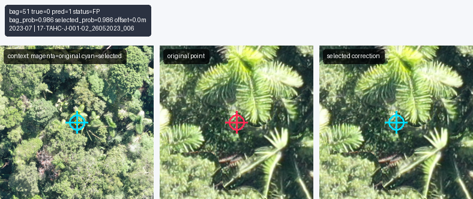
bag 51 | FP | bag 0.986 | inst 0.986 | 0.0m bag 186 | TP | bag 0.986 | inst 0.999 | 10.0m
bag 186 | TP | bag 0.986 | inst 0.999 | 10.0m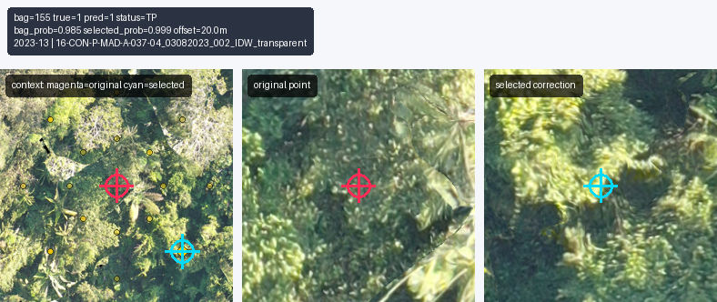
bag 155 | TP | bag 0.985 | inst 0.999 | 20.0m bag 157 | TP | bag 0.985 | inst 0.998 | 20.0m
bag 157 | TP | bag 0.985 | inst 0.998 | 20.0m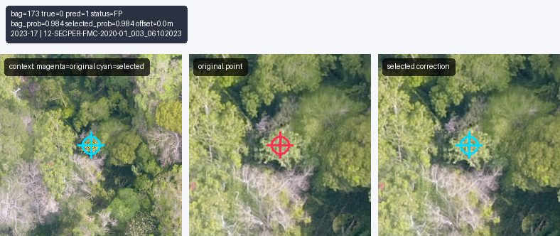
bag 173 | FP | bag 0.984 | inst 0.984 | 0.0m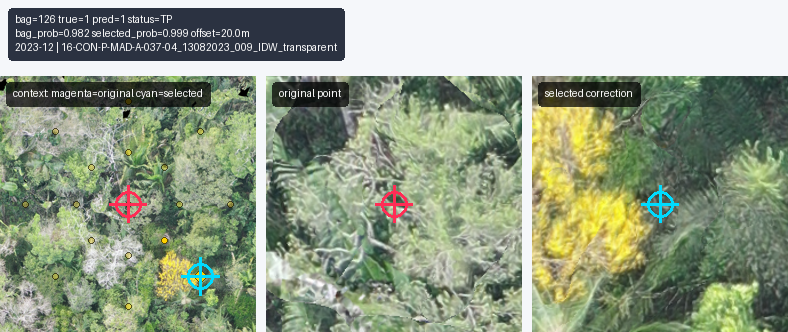
bag 126 | TP | bag 0.982 | inst 0.999 | 20.0m bag 161 | TP | bag 0.979 | inst 0.998 | 10.0m
bag 161 | TP | bag 0.979 | inst 0.998 | 10.0m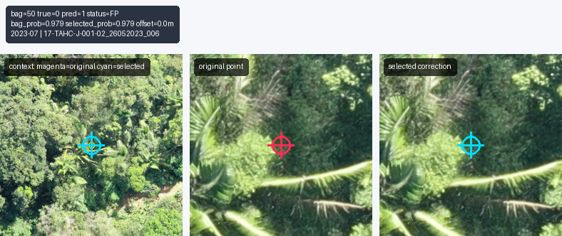
bag 50 | FP | bag 0.979 | inst 0.979 | 0.0m bag 143 | TP | bag 0.978 | inst 0.998 | 10.0m
bag 143 | TP | bag 0.978 | inst 0.998 | 10.0m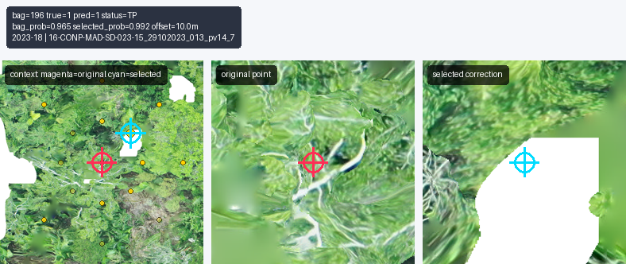
bag 196 | TP | bag 0.965 | inst 0.992 | 10.0m bag 168 | FP | bag 0.962 | inst 0.962 | 0.0m
bag 168 | FP | bag 0.962 | inst 0.962 | 0.0m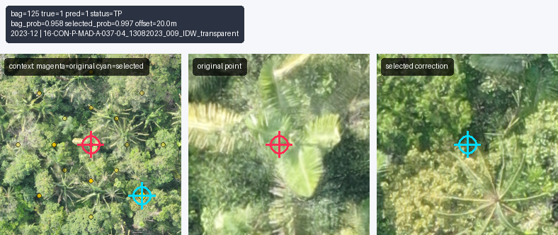
bag 125 | TP | bag 0.958 | inst 0.997 | 20.0m bag 113 | TP | bag 0.957 | inst 0.994 | 20.0m
bag 113 | TP | bag 0.957 | inst 0.994 | 20.0m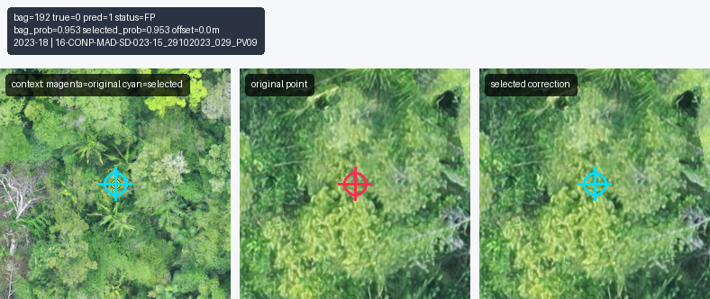
bag 192 | FP | bag 0.953 | inst 0.953 | 0.0m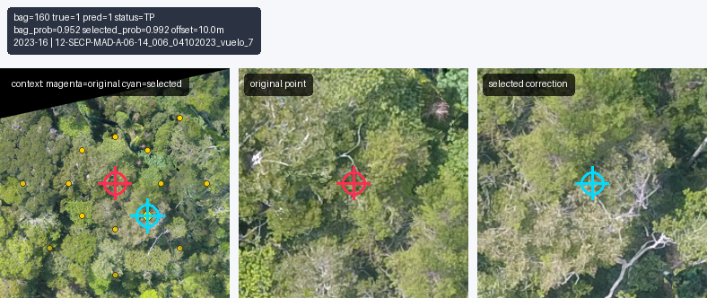
bag 160 | TP | bag 0.952 | inst 0.992 | 10.0m bag 166 | TP | bag 0.950 | inst 0.996 | 10.0m
bag 166 | TP | bag 0.950 | inst 0.996 | 10.0m bag 146 | TP | bag 0.947 | inst 0.996 | 10.0m
bag 146 | TP | bag 0.947 | inst 0.996 | 10.0m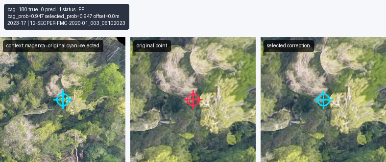
bag 180 | FP | bag 0.947 | inst 0.947 | 0.0m bag 194 | FP | bag 0.946 | inst 0.946 | 0.0m
bag 194 | FP | bag 0.946 | inst 0.946 | 0.0m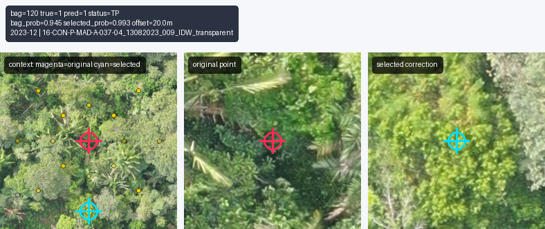
bag 120 | TP | bag 0.945 | inst 0.993 | 20.0m bag 148 | TP | bag 0.944 | inst 0.992 | 20.0m
bag 148 | TP | bag 0.944 | inst 0.992 | 20.0m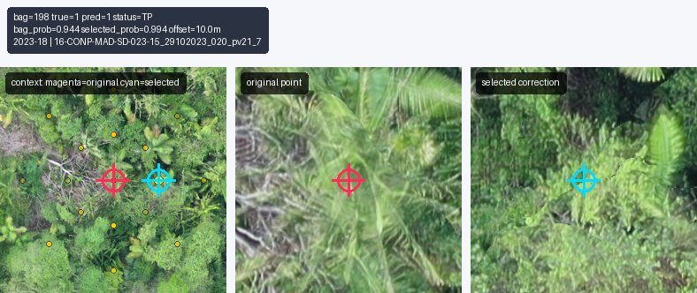
bag 198 | TP | bag 0.944 | inst 0.994 | 10.0m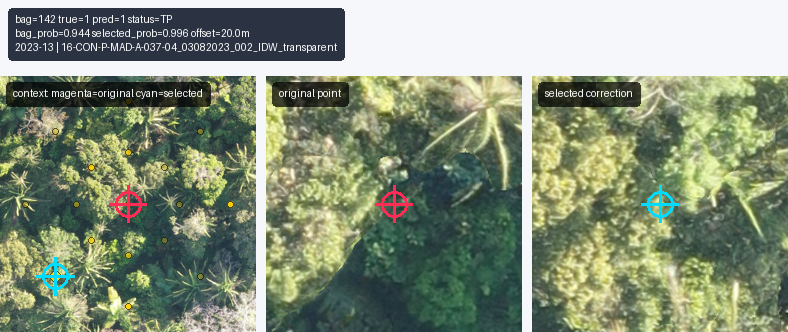
bag 142 | TP | bag 0.944 | inst 0.996 | 20.0m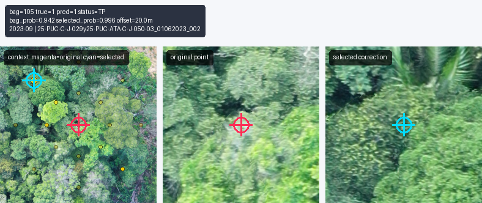
bag 105 | TP | bag 0.942 | inst 0.996 | 20.0m bag 102 | FP | bag 0.940 | inst 0.940 | 0.0m
bag 102 | FP | bag 0.940 | inst 0.940 | 0.0m bag 115 | TP | bag 0.939 | inst 0.994 | 20.0m
bag 115 | TP | bag 0.939 | inst 0.994 | 20.0m bag 104 | TP | bag 0.930 | inst 0.986 | 10.0m
bag 104 | TP | bag 0.930 | inst 0.986 | 10.0m bag 69 | FP | bag 0.929 | inst 0.929 | 0.0m
bag 69 | FP | bag 0.929 | inst 0.929 | 0.0m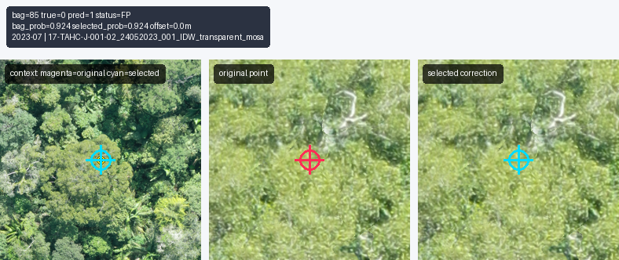
bag 85 | FP | bag 0.924 | inst 0.924 | 0.0m bag 150 | TP | bag 0.905 | inst 0.988 | 10.0m
bag 150 | TP | bag 0.905 | inst 0.988 | 10.0m bag 164 | FP | bag 0.900 | inst 0.900 | 0.0m
bag 164 | FP | bag 0.900 | inst 0.900 | 0.0m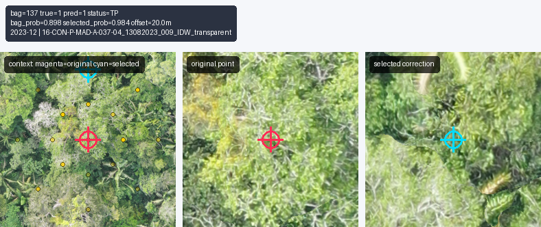
bag 137 | TP | bag 0.898 | inst 0.984 | 20.0m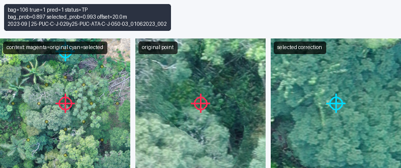
bag 106 | TP | bag 0.897 | inst 0.993 | 20.0m bag 187 | TP | bag 0.895 | inst 0.987 | 20.0m
bag 187 | TP | bag 0.895 | inst 0.987 | 20.0m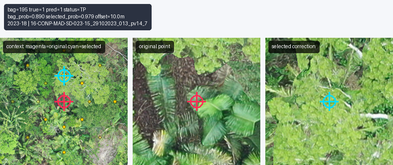
bag 195 | TP | bag 0.890 | inst 0.979 | 10.0m bag 197 | TP | bag 0.889 | inst 0.975 | 20.0m
bag 197 | TP | bag 0.889 | inst 0.975 | 20.0m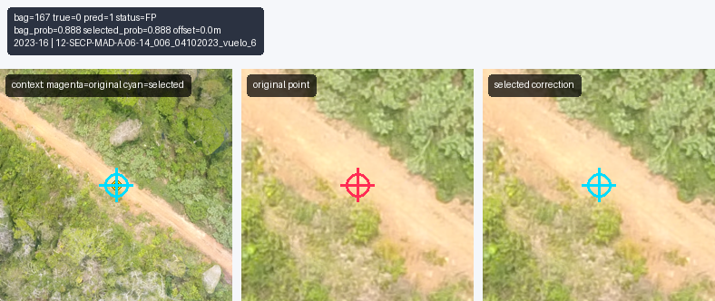
bag 167 | FP | bag 0.888 | inst 0.888 | 0.0m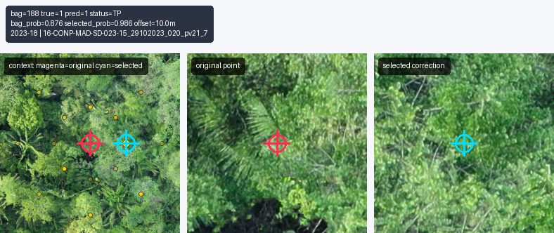
bag 188 | TP | bag 0.876 | inst 0.986 | 10.0m bag 18 | FP | bag 0.873 | inst 0.873 | 0.0m
bag 18 | FP | bag 0.873 | inst 0.873 | 0.0m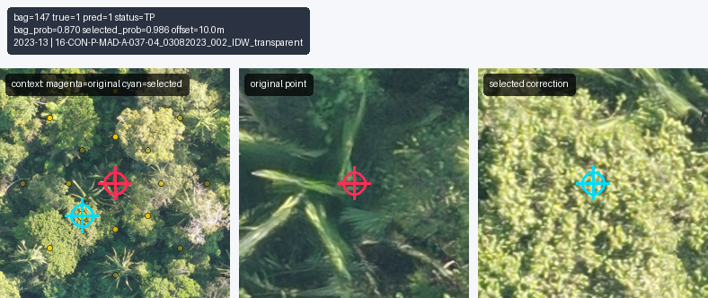
bag 147 | TP | bag 0.870 | inst 0.986 | 10.0m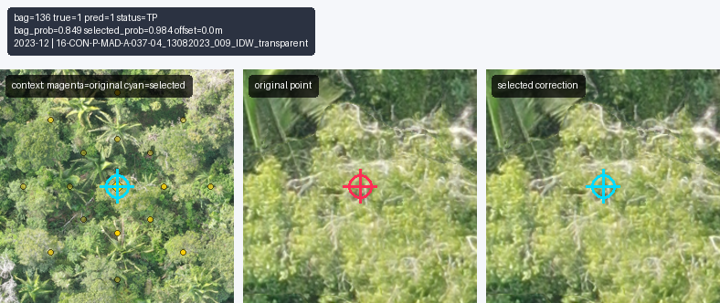
bag 136 | TP | bag 0.849 | inst 0.984 | 0.0m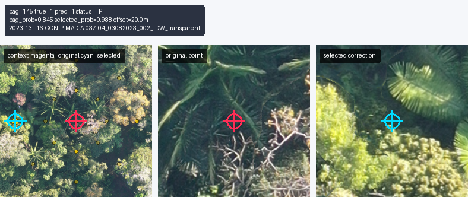
bag 145 | TP | bag 0.845 | inst 0.988 | 20.0m bag 119 | FP | bag 0.838 | inst 0.838 | 0.0m
bag 119 | FP | bag 0.838 | inst 0.838 | 0.0m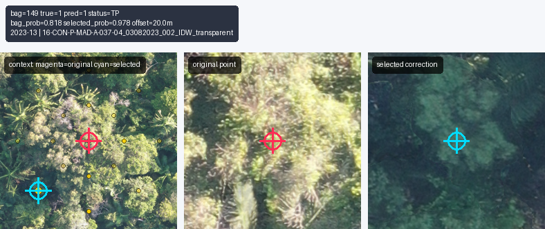
bag 149 | TP | bag 0.818 | inst 0.978 | 20.0m bag 193 | FP | bag 0.818 | inst 0.818 | 0.0m
bag 193 | FP | bag 0.818 | inst 0.818 | 0.0m bag 64 | FP | bag 0.817 | inst 0.817 | 0.0m
bag 64 | FP | bag 0.817 | inst 0.817 | 0.0m bag 123 | FP | bag 0.814 | inst 0.814 | 0.0m
bag 123 | FP | bag 0.814 | inst 0.814 | 0.0m bag 162 | FP | bag 0.812 | inst 0.812 | 0.0m
bag 162 | FP | bag 0.812 | inst 0.812 | 0.0m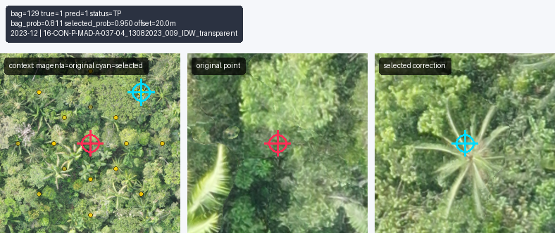
bag 129 | TP | bag 0.811 | inst 0.950 | 20.0m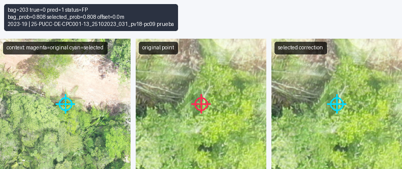
bag 203 | FP | bag 0.808 | inst 0.808 | 0.0m bag 61 | FP | bag 0.807 | inst 0.807 | 0.0m
bag 61 | FP | bag 0.807 | inst 0.807 | 0.0m bag 131 | TP | bag 0.799 | inst 0.979 | 10.0m
bag 131 | TP | bag 0.799 | inst 0.979 | 10.0m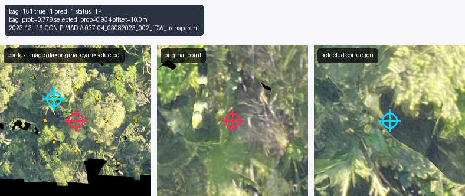
bag 151 | TP | bag 0.779 | inst 0.934 | 10.0m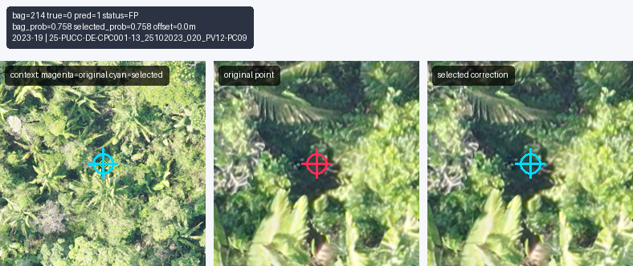
bag 214 | FP | bag 0.758 | inst 0.758 | 0.0m bag 135 | FP | bag 0.732 | inst 0.732 | 0.0m
bag 135 | FP | bag 0.732 | inst 0.732 | 0.0m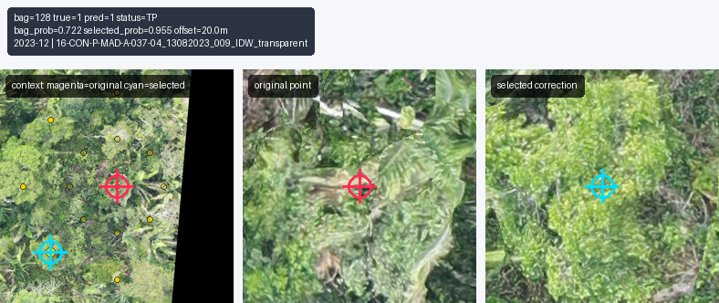
bag 128 | TP | bag 0.722 | inst 0.955 | 20.0m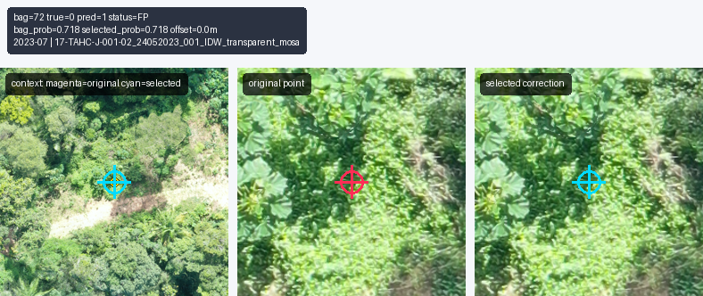
bag 72 | FP | bag 0.718 | inst 0.718 | 0.0m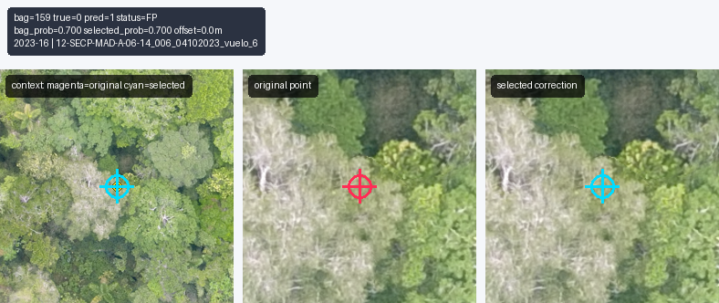
bag 159 | FP | bag 0.700 | inst 0.700 | 0.0m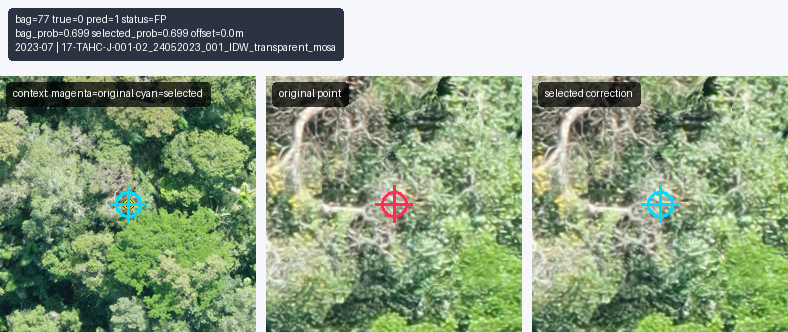
bag 77 | FP | bag 0.699 | inst 0.699 | 0.0m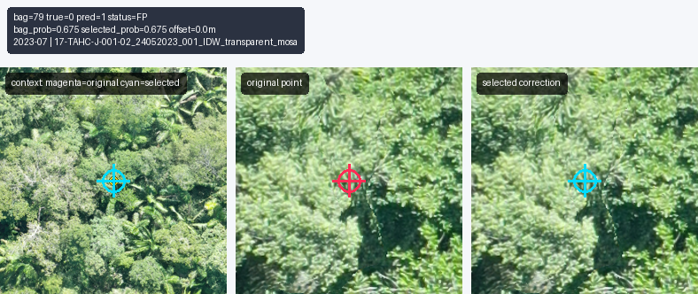
bag 79 | FP | bag 0.675 | inst 0.675 | 0.0m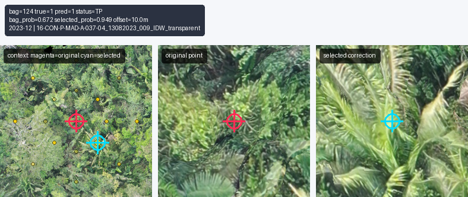
bag 124 | TP | bag 0.672 | inst 0.949 | 10.0m bag 114 | TP | bag 0.668 | inst 0.965 | 20.0m
bag 114 | TP | bag 0.668 | inst 0.965 | 20.0m bag 111 | TP | bag 0.614 | inst 0.963 | 20.0m
bag 111 | TP | bag 0.614 | inst 0.963 | 20.0m bag 84 | FP | bag 0.601 | inst 0.601 | 0.0m
bag 84 | FP | bag 0.601 | inst 0.601 | 0.0m bag 153 | TP | bag 0.575 | inst 0.906 | 10.0m
bag 153 | TP | bag 0.575 | inst 0.906 | 10.0m bag 97 | FP | bag 0.575 | inst 0.575 | 0.0m
bag 97 | FP | bag 0.575 | inst 0.575 | 0.0m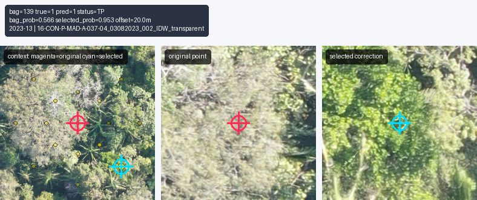
bag 139 | TP | bag 0.566 | inst 0.953 | 20.0m bag 121 | FP | bag 0.554 | inst 0.554 | 0.0m
bag 121 | FP | bag 0.554 | inst 0.554 | 0.0m bag 109 | TP | bag 0.533 | inst 0.903 | 10.0m
bag 109 | TP | bag 0.533 | inst 0.903 | 10.0m